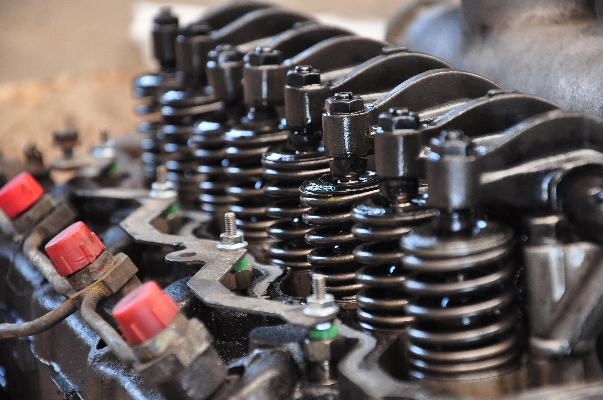
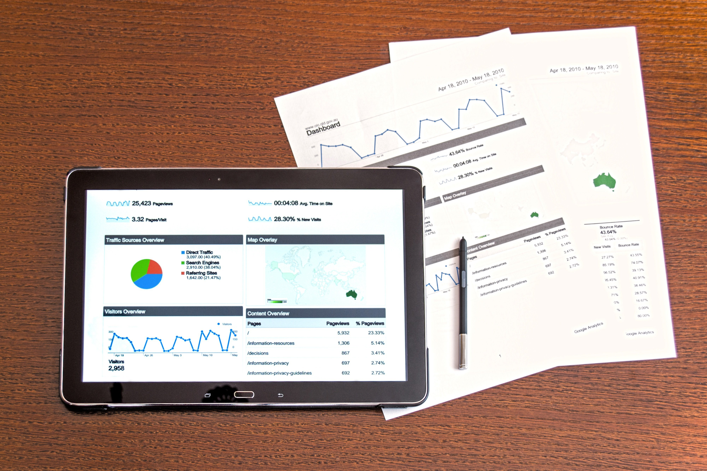

🔧 정밀 엔진 관리
엔진 상태를 실시간으로 모니터링하고 예방 정비를 통해 장비 수명을 연장하세요

⚙️ 스마트 부품 관리
모든 부품의 교체 주기와 상태를 자동으로 추적하여 최적의 성능을 유지하세요

📊 완벽한 이력 관리
모든 정비 기록이 자동으로 저장되어 언제든지 확인할 수 있습니다
OCR 기술로 정비 이력을 자동화하고,
AI가 분석하는 스마트 농기계 관리 플랫폼

엔진 상태를 실시간으로 모니터링하고 예방 정비를 통해 장비 수명을 연장하세요
모든 부품의 교체 주기와 상태를 자동으로 추적하여 최적의 성능을 유지하세요

모든 정비 기록이 자동으로 저장되어 언제든지 확인할 수 있습니다
Agri Log의 핵심 기능을 애니메이션으로 확인하세요
정비명세서를 촬영하면 Google Vision API가 자동으로 기대번호, 비용, 정비업체를 추출합니다.
정비업체에서 트랙터의 QR 코드를 스캔하면 즉시 이력 관리를 시작할 수 있습니다.
기대번호만 입력하면 등록된 모든 정보를 실시간으로 조회할 수 있습니다.
모든 정비 내역이 시간순으로 정리되어 농기계 관리 상태를 한눈에 파악할 수 있습니다.
해당 콤바인 기종의 유압작업 부품 노후화로 인한 정밀 점검 및 교체 작업이 실시되었습니다. 최근 정비 이력을 분석한 결과, 엔진 계통은 양호하나 유압 시스템의 주기적 관리가 필요합니다.
정비 데이터를 AI가 분석하여 전문가 수준의 진단 의견을 제공합니다.
농기계 산업의 현재 문제점과 Agri Log의 솔루션
대다수의 농민이 정비 명세서를 종이 형태로 보관하거나 분실하여, 기계의 정확한 상태를 증명하기 어려움
사진 한 장으로 데이터베이스화하여 영구 보관 및 관리
중고 거래 시 구매자는 관리 이력을 알 수 없고, 판매자는 적정 가격 산정 기준이 부족하여 불신이 발생
객관적 정비 데이터와 ML 모델로 투명한 중고 시세 형성
복잡한 부품명과 정비 내용을 이해하기 어려워 예방 정비 타이밍을 놓치고 과도한 수리비가 지출됨
AI 분석으로 기술 용어를 쉽게 풀이하고 계통별 진단 제공
Agri Log가 제공하는 핵심 기능들
Google Vision API를 통해 명세서 내 기대번호, 모델명, 총 비용, 정비업체명을 자동 인식합니다.
대동 등 주요 제조사의 기대번호 규칙을 분석하여 기종, 모델, 제작 연도를 자동으로 식별합니다.
머신러닝 모델을 통해 기대번호와 가동시간 기반으로 예상 시세를 산출합니다.
교체 부품 데이터를 분석하여 엔진, 유압 등 주요 계통의 상태를 전문가 관점에서 진단합니다.
모든 정비 내역을 체계적으로 관리하고 시각화하여 농기계 상태를 한눈에 파악합니다.
언제 어디서나 스마트폰으로 농기계 정보를 확인하고 관리할 수 있습니다.
최신 기술로 구현된 안정적인 플랫폼
다양한 고객층을 위한 맞춤형 가치 제공
기본 기능 무료(Freemium), 고급 분석은 구독 또는 수수료
예측 시세와 관리 이력 기반 신뢰도 높은 직거래 장터
소모품 교체 주기 알림으로 제휴 정비소 연결
완벽한 정비 이력 PDF 리포트 발행
SaaS(소프트웨어 서비스) 구독 모델
명세서 OCR 자동 입력, 고객 장비 이력 관리 시스템
부족한 부품 즉시 주문 가능한 B2B 커머스
정비 주기 도래 고객 대상 쿠폰 발행 툴
데이터 판매 및 라이선스, 대규모 시스템 연동
기종별 결함 빈도, 소모품 교체 주기 등 실제 필드 데이터
면세유 배정, 보조금 산정용 실제 가동시간 데이터
담보 대출 시세 평가, 정비 이력 기반 보험 요율 산정
농기계 관리의 새로운 경험을 만나보세요
* 앱을 시작하면 Agri Log 대시보드로 이동합니다